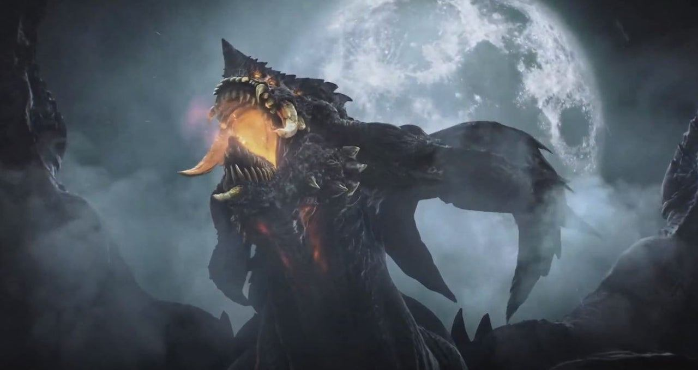
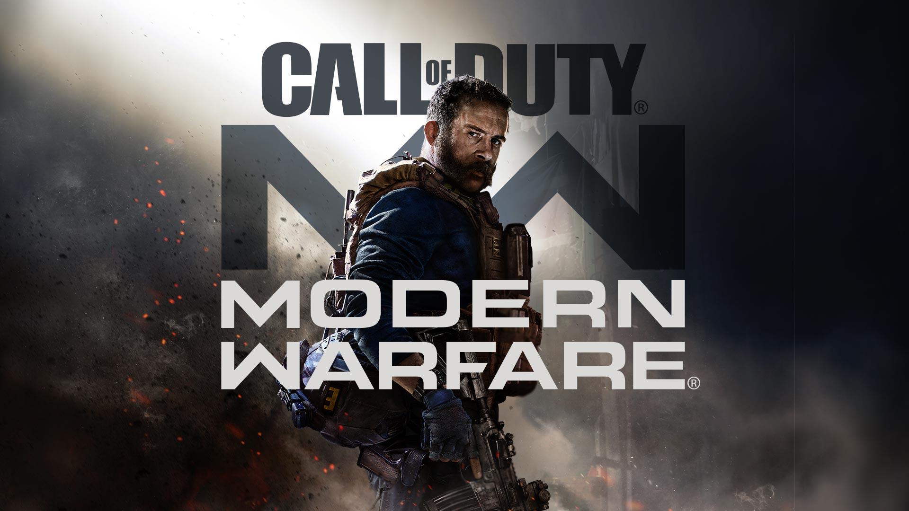
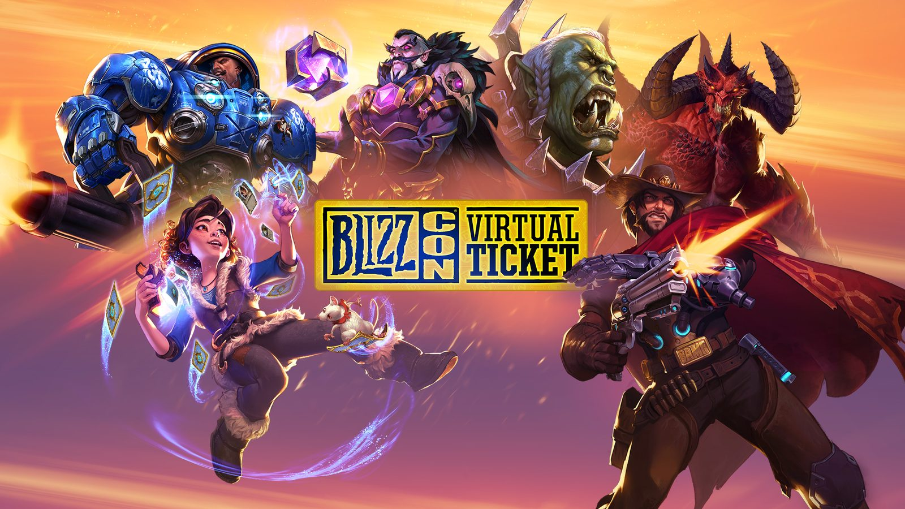
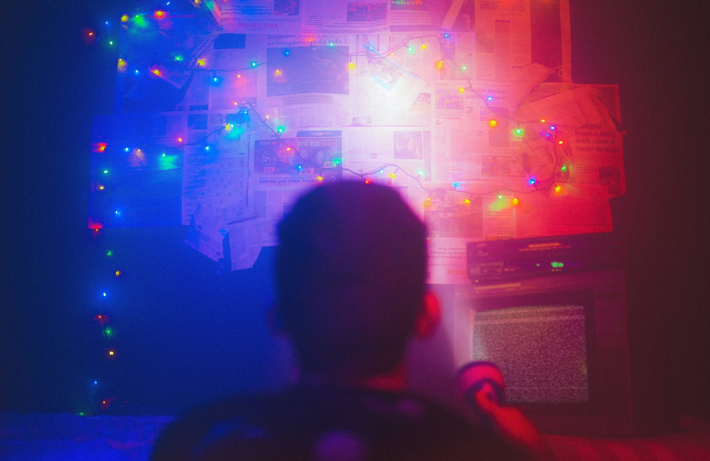
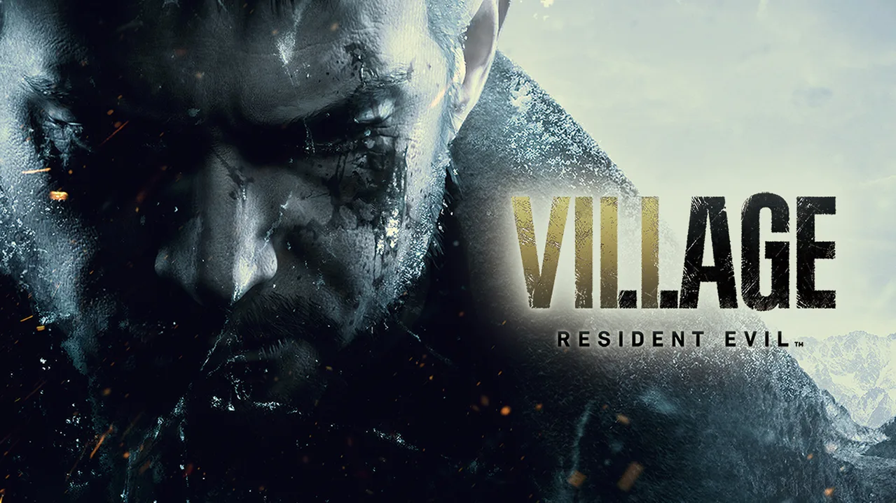
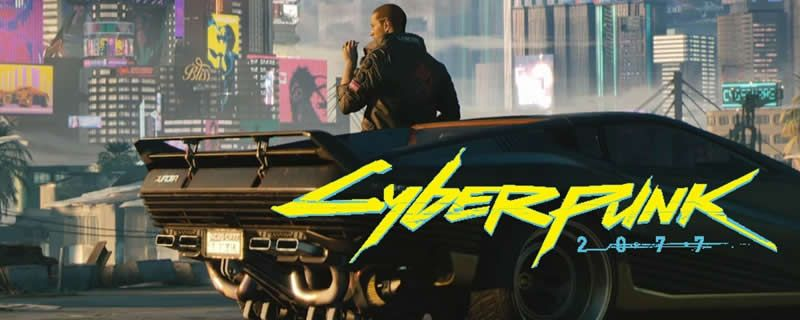
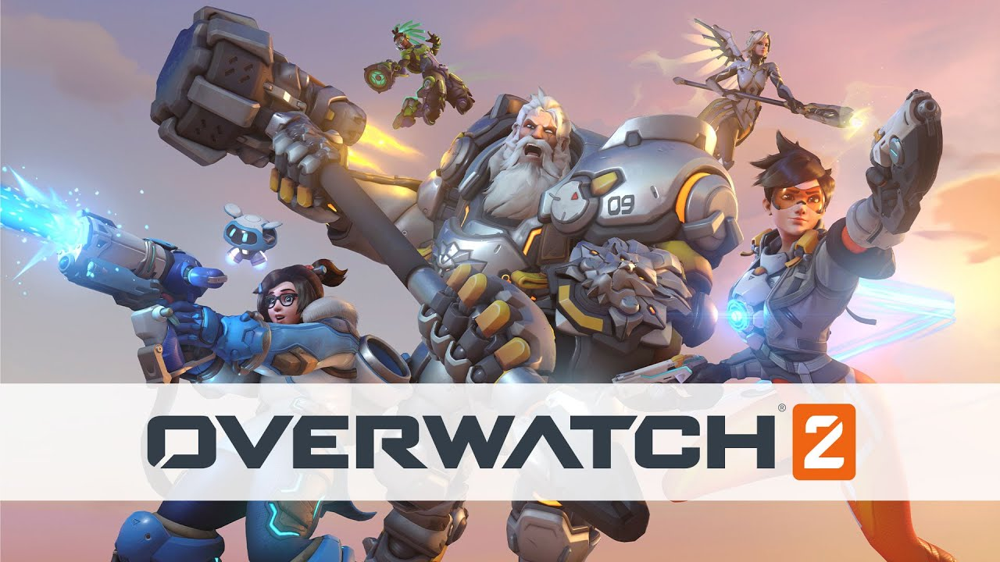

DestacadoDemon's Souls Remake: el clásico de FromSoftware que estrenó la PS5
Bluepoint Games reconstruyó desde cero el juego de 2009 sin traicionar su esencia: misma dificultad, mismo mundo y una generación nueva de gráficos.
Leer más
DestacadoBluepoint Games reconstruyó desde cero el juego de 2009 sin traicionar su esencia: misma dificultad, mismo mundo y una generación nueva de gráficos.
Leer más
ClásicoEl regreso del Capitán Price en 2019 renovó la saga e introdujo el juego cruzado entre PC y consolas.
Leer más
EventosCharlas, torneos y objetos exclusivos para los juegos de Blizzard sin necesidad de viajar a California.
Leer más
GuíaTiras LED, luz indirecta y colores que no cansan la vista: ideas para un rincón de juego con estilo.
Leer más
Mezcla la acción de Resident Evil 4 con el terror en primera persona de RE7, con Lady Dimitrescu como gran protagonista.
Ver review completa
Tras la actualización 2.0 y Phantom Liberty, Night City por fin cumple lo que prometía: uno de los mundos abiertos más densos del género.
Ver review completa
El paso a equipos de 5 contra 5 y al modelo gratuito hizo las partidas más rápidas y accesibles, aunque su sistema de temporadas divide opiniones.
Ver review completaArtículo de demostración del portal ONI.